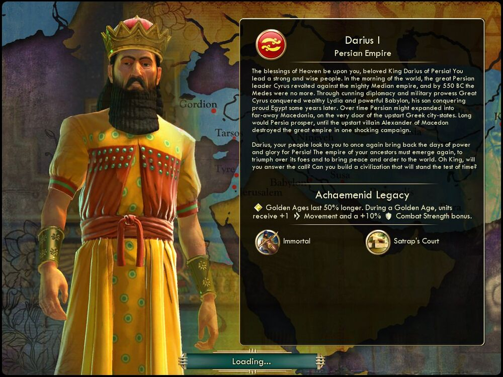

다리우스 1세 Darius I페르시아 Persia |
|  |
| 경애하는 페르시아의 다리우스 왕이시여, 천상의 축복이 함께하시기를 빕니다! 왕께서는 강하고 현명한 백성을 이끄십니다. 기원전 550년, 페르시아의 위대한 지도자이신 키루스는
강대하던 메데스 제국을 무너뜨렸습니다. 키루스 대왕은 외교 책략과 군사력을 바탕으로 부유한 리디아와 강력한 바빌론을 정복하였고, 그로부터 수년 후 그의 아들은 오만한 이집트를
정복하였습니다. 마케도니아의 알렉산더가 단 한 번의 전쟁으로 페르시아 제국을 파멸시키지만 않았어도 페르시아는 건방진 그리스 도시 국가들의 문전에 있는 머나먼 마케도니아까지 진출할
수도 있었을 것입니다.[1]
다리우스시여, 페르시아의 백성은 그대가 다시 한 번 페르시아의 영광과 권위를 되찾으시길 원합니다! 선조의 제국을 다시 일으켜 적에게서 승리를 거두고 세계에 평화와 질서를 가져와야 합니다. 왕이시여, 부름에 응하고 시대의 한계를 뛰어넘는 문명을 건설해 주시겠습니까? |